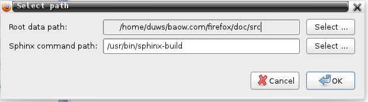
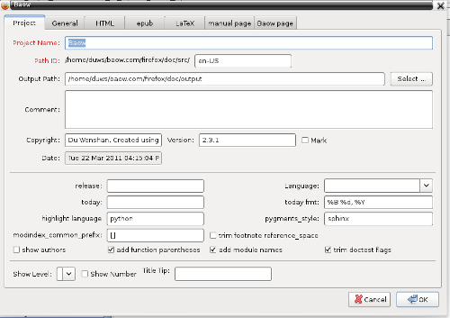

|
|
English 简体中文 |
You can get the full power of Baow by project management.
Click Root Path button in the projects management window, you should select some base path to save your data and pages at first. You can select a path by click Select button.

- Root data path:
- save all your data in this path.
- Sphinx command path:
Where your sphinx installed. Windows sphinx path like this:
C:\Python27\Scripts\sphinx-build.exeLinux, BSD path like this:
/usr/bin/sphinx-build
After all your base path done, click New Project button in the projects management window, and input project information.

Project Name and Path ID are required, default config is suitable for common task. If you don’t want to generate web pages finally, others options can be blank or default.
You should read The build configuration file documents carefully when inputing others options. Most of them are plain text, some options are in Python language format, check The build configuration file document, please.
Finally, you should click Apply button to use this project config and settings.

 :
: